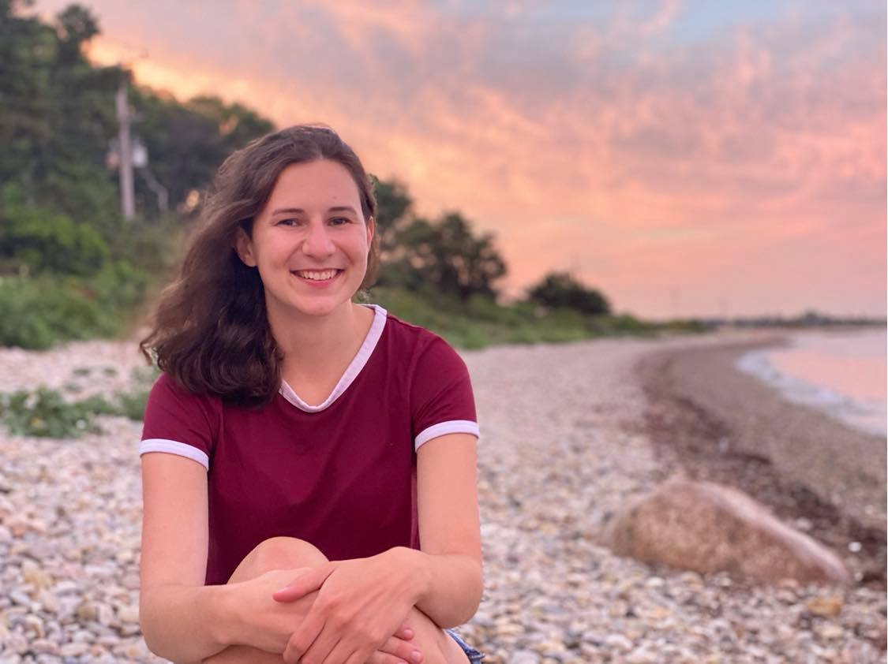
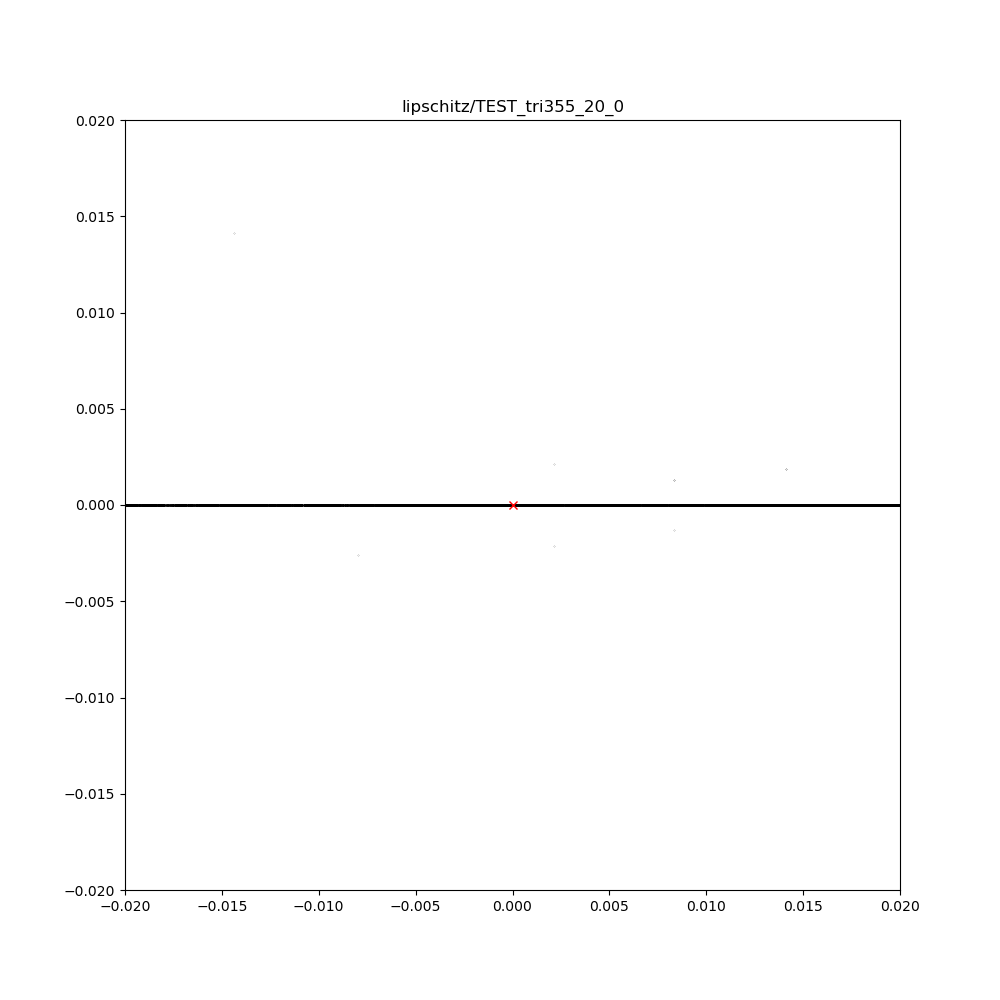
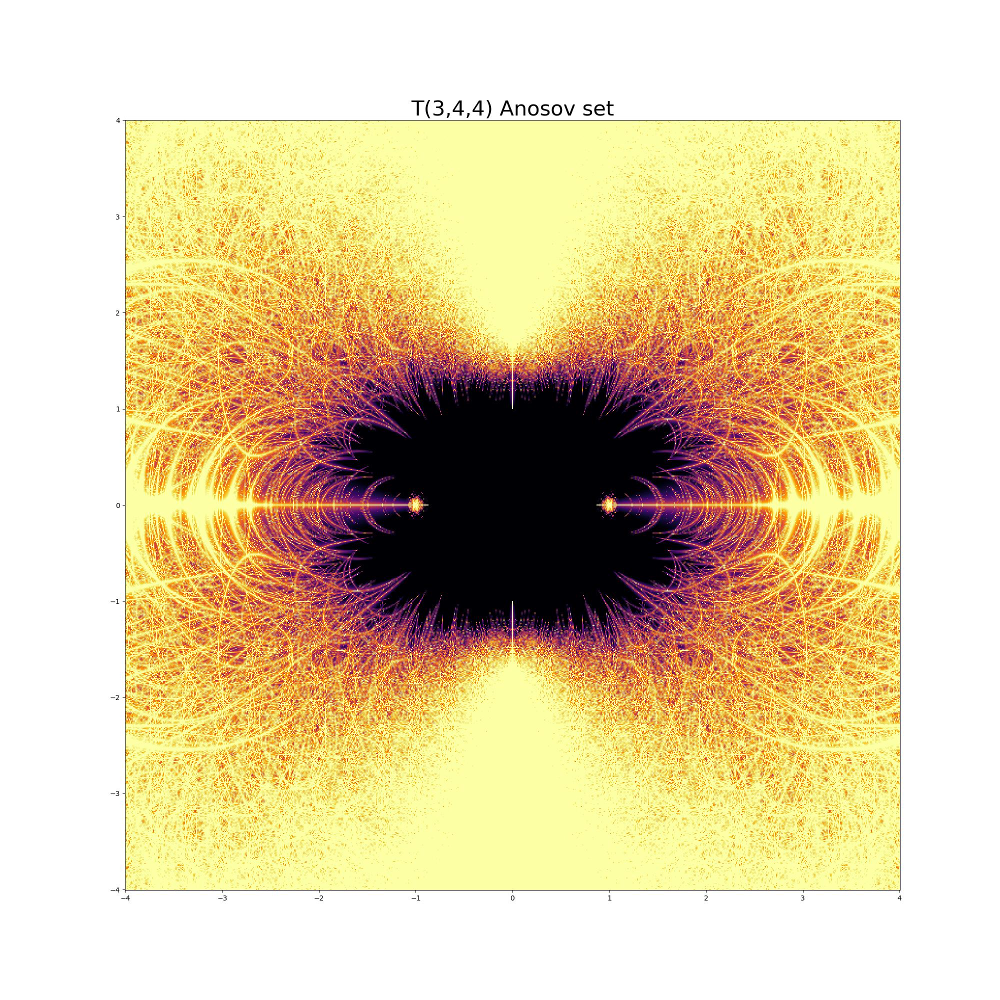
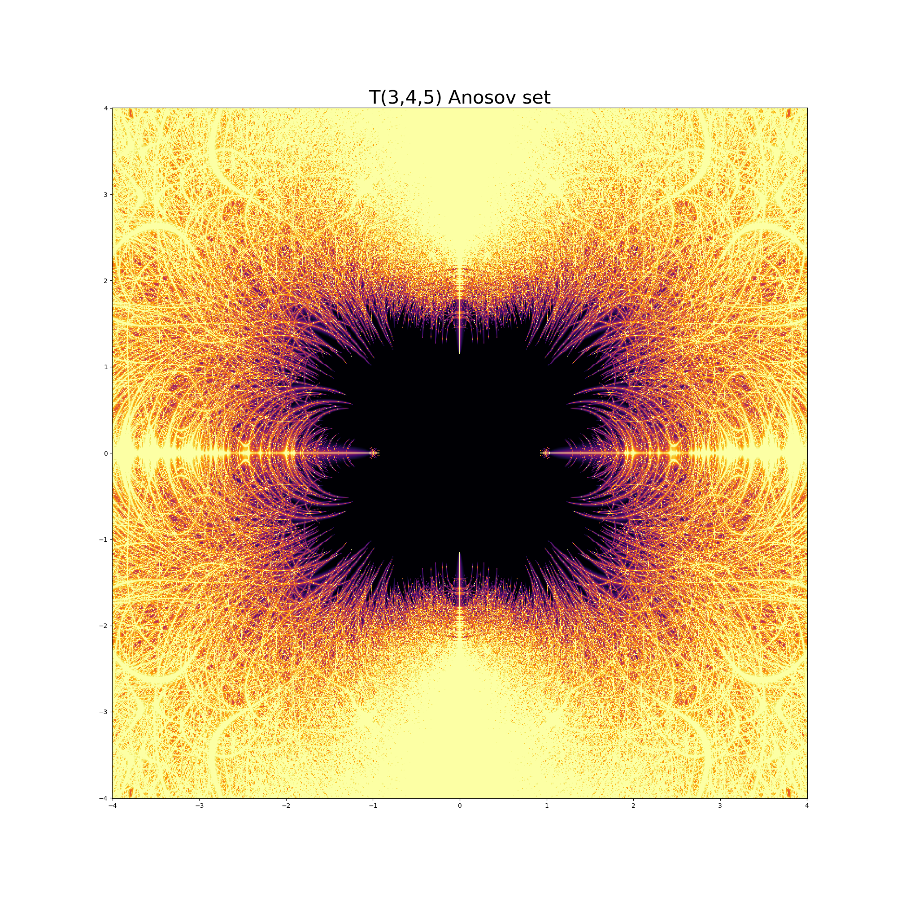
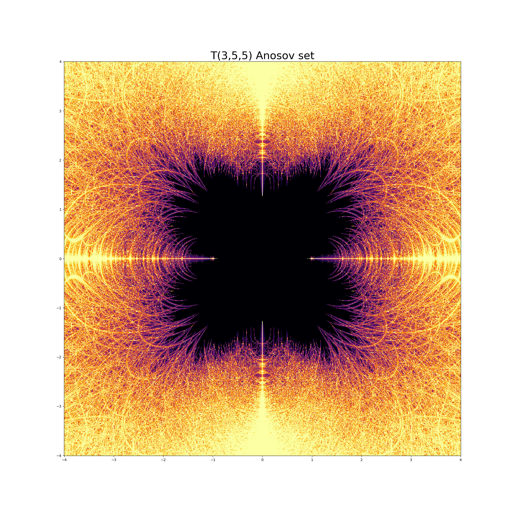
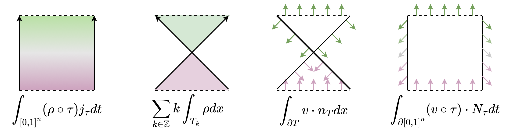
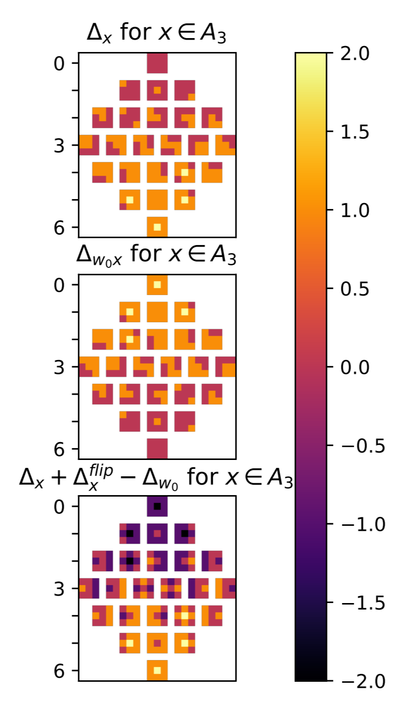

Jennifer Vaccaro
Email: jvacca4 at uic dot edu
I am a fifth year graduate student in the UIC
Department of Mathematics, Statistics, and Computer Science, studying hyperbolic geometry and Anosov representations with advisor Emily Dumas.
Outside of math, I love to hike, write music, and play soccer. I'm also involved with our graduate workers' union, UIC GEO.

Teaching
As of Summer 2025, I'm funded as a graduate Research Assistant.
I also advise for COMAP MCM at UIC, an undergraduate math modeling competition.
Past Teaching
- Spring 2025: Teaching Assistant Coordinator (covering for TAs in Math, Stat, and MCS courses)
- Spring 2024: Stat 101 Introduction to Statistics
- Spring 2022: Math 180 Calculus I
- Fall 2021: Math 220 Differential Equations
- Spring 2021: MCS 275 Programming Tools and File Management
- Fall 2020: MCS 260 Introduction to Computer Science
- Spring 2016: Probability and Statistics (Olin College of Engineering)
- Fall 2016: Introduction to Complex Variables (Olin)
Workshops and conferences
Here are some recent (and upcoming) events where we may have met.
- October 2024: 20 years of Anosov representations (MPI-MIS, Leipzig, Germany) Website Workshop talk: Symmetric spaces in higher rank
- July 2024: Anosov representations and higher Teichmüller theory (AMS-UMI, Palermo, Italy) Website Talk: Anosov representations of triangle reflection groups in rank 2 (slides)
- July 2024: Moving to higher rank: from hyperbolic to Anosov – A conference in honor of Dick Canary (Centraro, Italy) Website
- April 2024: Graduate student topology and geometry conference (Michigan State, Lansing, MI) Website
- July 2023: Group actions and low-dimensional topology (ICMAT, El Barco de Avila, Spain) Website
- June 2023: Homogeneous dynamics and geometry in higher-rank Lie groups (IHES, Paris, France) Website
- May 2023: Higgs bundles, character varieties, and higher Teichmuller space (ICMAT, Miraflores de la Sierra, Spain) Website
- April 2022: Graduate student topology and geometry conference (Georgia Tech, Atlanta, GA) Website
Research and Pictures
I am interested in hyperbolic geometry and Anosov representations into Lie groups. I also enjoy visualizing mathematics using software. My research has been supported by NSF grants during several summers and semesters throughout graduate school.
Here are pictures of some ideas that I have been thinking about recently. They were created with Draw IO or with Matplotlib.
- Hyperconvex limit curves: For hyperconvex representations, the projection of the limit curve is injective. As we perturb the T(3,5,5) representation in the SL(3,C) character variety towards the Anosov boundary, this projected limit curve appears to remain injective.

- Visualizations of the C-Hitchin component for T(3,4,4), T(3,4,5), and T(3,5,5) representations in SL(3,C). Black means "likely Anosov" and lighter colors mean "not Anosov." See these slides for more context.



- Triangle reflection groups act on H^2 by isometries with fundamental domain a 2-orbifold triangle. Though these groups have torsion, they still admit nice representations into Lie groups.
.png)
- In ALE hydrodynamics remap, you can compute the mass flux through a swept region in several equivalent ways.

- The colored squares are integer matrices related to the Bruhat order on A_3, which is the symmetric group on four letters.
